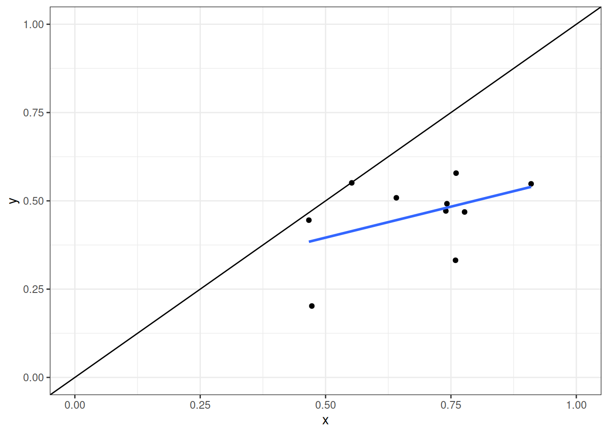
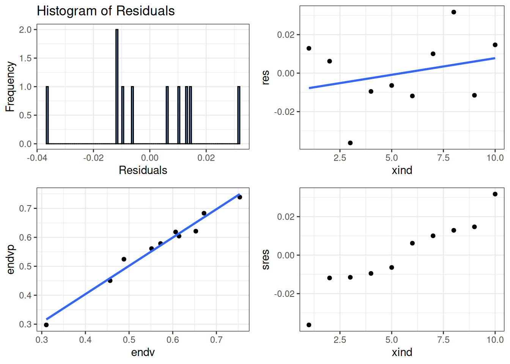

| variable | mean | std |
|---|---|---|
| S | 250.1818182 | 149.6887680 |
| T | 156.4090909 | 83.0568704 |
| U | 143.0909091 | 73.6031243 |
| V | 311.8636364 | 149.4887463 |
| R | 11.5000000 | 6.4935866 |
| Z | 861.5454545 | 425.4729276 |
| x | 0.6062204 | 0.0823793 |
| y | 0.3142964 | 0.0626658 |
| zeta | 1.1696106 | 0.2313946 |
| alpha | 0.4512405 | 0.0732275 |
| lamda | 0.6511253 | 0.0239190 |
| g | 0.4357092 | 0.0823097 |
| h | 0.4788419 | 0.0849967 |
| Gamma | 0.5378494 | 0.0585061 |
| Omega | 0.4656832 | 0.0470639 |
| m | 0.3308302 | 0.0389096 |
| n | 0.6272453 | 0.0554818 |
| xi | 1.2780878 | 0.4091593 |
Tabsets
Tabsets
Application 0
Application:
Information
- Election system:
- Type of race:
- Candidates:
- Modes of voting:
- Type of race:
- \(H_0:\) Normal election
- \(H_1:\) Rigged election:
- Manifold object
- Solved for
Link to raw data and independent calculcations (sol2022_1?)
`geom_smooth()` using formula = 'y ~ x'
Warning: Removed 18 rows containing missing values (`geom_line()`).Warning: Removed 16 rows containing missing values (`geom_point()`).
[[1]]
Call:
lm(formula = formo, data = edfc)
Residuals:
Min 1Q Median 3Q Max
-0.029360 -0.007123 0.003458 0.008282 0.017762
Coefficients:
Estimate Std. Error t value Pr(>|t|)
(Intercept) -0.04256 0.02101 -2.026 0.057 .
x 0.56467 0.05250 10.757 0.00000000161 ***
y 0.48197 0.06901 6.984 0.00000118425 ***
---
Signif. codes: 0 '***' 0.001 '**' 0.01 '*' 0.05 '.' 0.1 ' ' 1
Residual standard error: 0.01287 on 19 degrees of freedom
Multiple R-squared: 0.972, Adjusted R-squared: 0.9691
F-statistic: 330.2 on 2 and 19 DF, p-value: 0.00000000000000175
Ballot predictions based on limit information implied by the estimated Manifold object(s)
References
knitr::knit_exit()